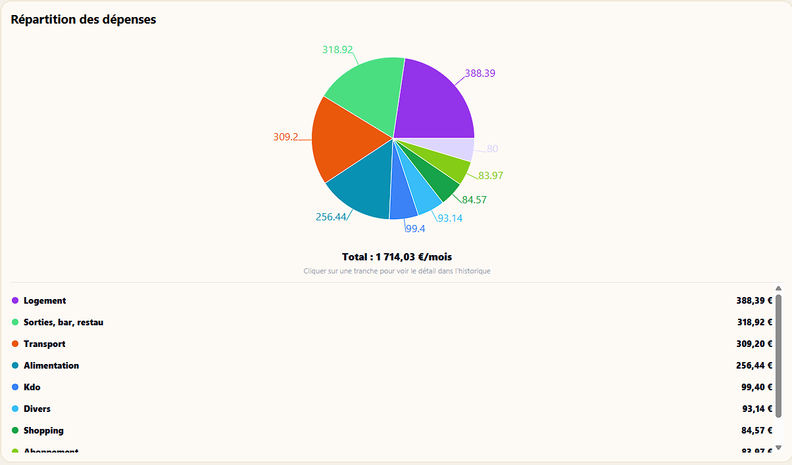
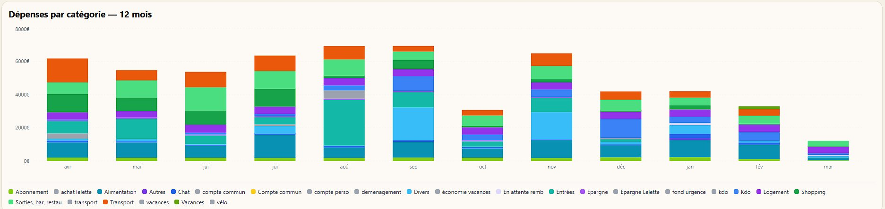
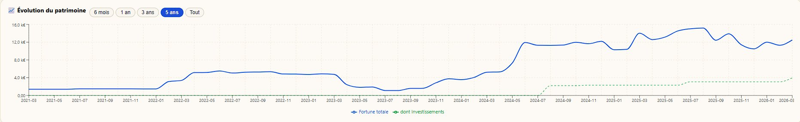
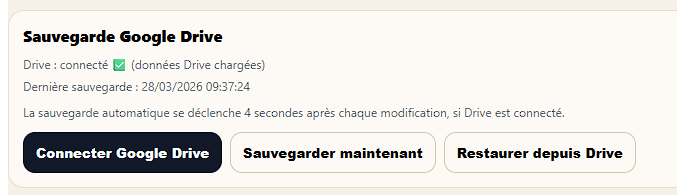

Stateri est l'application de budget et de patrimoine qui fonctionne même sans connexion. Vos données sont sauvegardées uniquement sur votre Google Drive — sur votre téléphone, sur votre Drive, nulle part ailleurs.

Stateri est conçu pour ceux qui veulent vraiment comprendre et piloter leur budget et leur patrimoine — en gardant leurs données 100% privées.
Gérez plusieurs comptes bancaires, plusieurs banques et plusieurs devises dans une interface unifiée.
Découvrir →Camemberts par catégorie, histogramme 12 mois, évolution du solde et vue 30 jours glissants.
Découvrir →Planifiez vos dépenses à venir, projetez votre solde fin de mois et recevez une alerte si vous passez sous un seuil.
Découvrir →Loyer, abonnements, revenus mensuels — définissez vos récurrences par intervalle et laissez Stateri les gérer.
Découvrir →Importez vos relevés CSV, Excel ou Crédit Mutuel — la reconnaissance par mots-clés catégorise automatiquement.
Découvrir →Portefeuille avec snapshots, suivi du patrimoine net et des dettes pour une vision complète de votre patrimoine.
Découvrir →Partagez les frais entre plusieurs personnes avec remboursements et coefficients de contribution.
Découvrir →L'histogramme empilé par catégorie vous permet d'identifier vos pics de dépenses et de comparer chaque mois en détail, sur toute une année.

Visualisez la courbe de votre fortune totale et de vos investissements sur 6 mois, 1 an, 3 ans ou tout l'historique. Suivez votre progression sur le long terme.

Contrairement aux applications fintech classiques, Stateri ne stocke rien sur ses propres serveurs. Toutes vos données sont écrites directement sur votre compte Google Drive personnel. Sur votre téléphone. Sur votre Drive. Nulle part ailleurs.
Vos données sont dans un fichier sur votre Google Drive. Vous pouvez les consulter, exporter ou supprimer indépendamment de Stateri (un fichier json est créé dans votre Google Drive à chaque sauvegarde).
Aucun backend, aucune base de données côté Stateri. Votre budget et votre patrimoine n'appartiennent qu'à vous.
L'app fonctionne sans connexion. La synchronisation Drive se fait automatiquement après chaque modification ou quand vous le décidez.
Vos données sur votre Drive = accessibles depuis tous vos appareils, à tout moment.

stateri-backup.json contenant toutes vos données, lisible et exportable librement.
Chaque onglet de Stateri fait l'objet d'une page dédiée avec explications et captures d'écran.
Saisie, import CSV/Excel, auto-catégorisation, récurrences et remboursements.
Voir la page →Camemberts, histogramme 12 mois, évolution du solde et prévisions budgétaires.
Voir la page →Fortune nette, investissements avec snapshots, dettes et évolution dans le temps.
Voir la page →Multi-compte, multi-banque, multi-devise et gestion multi-personnes avec coefficients.
Voir la page →Installez Stateri en quelques secondes. Aucun compte requis, aucune carte bleue. Vos données sur votre téléphone, sur votre Drive — nulle part ailleurs.